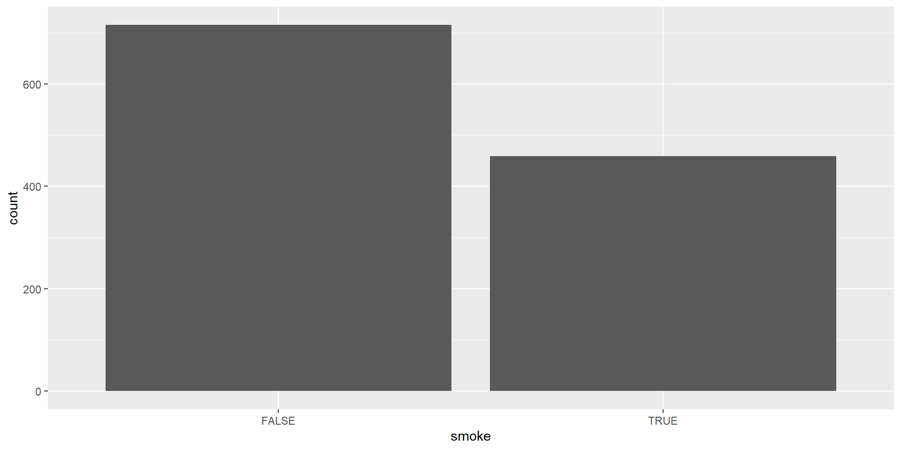
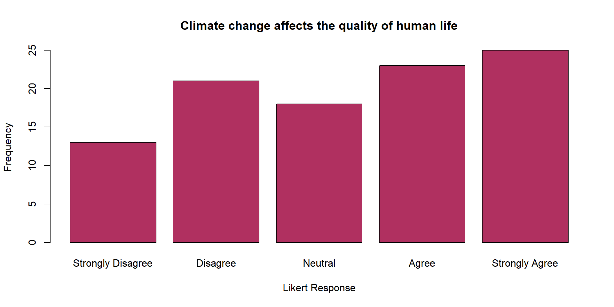
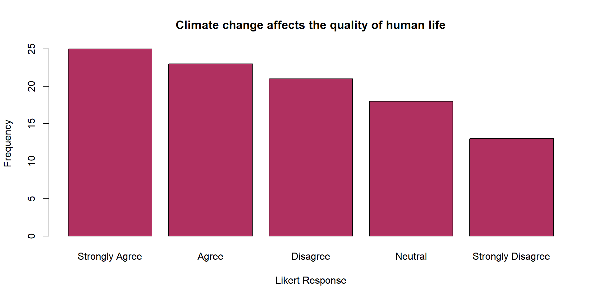
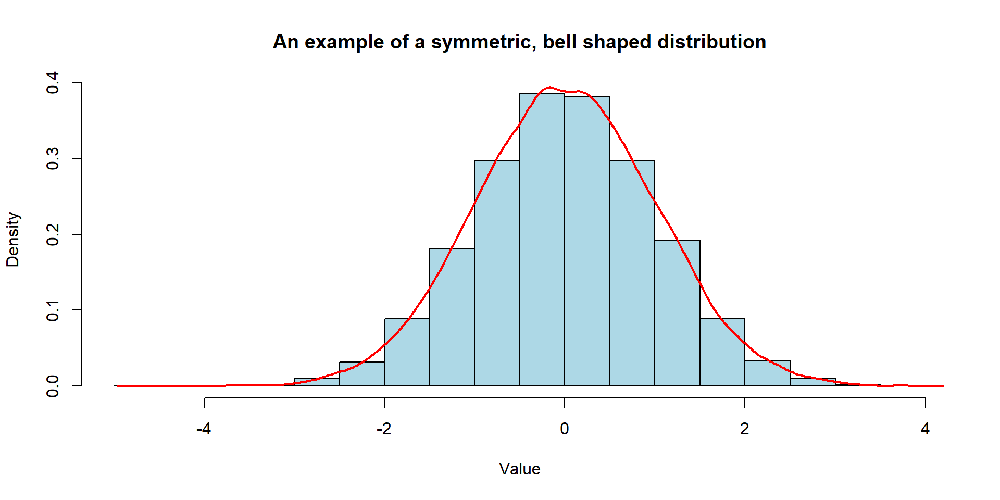
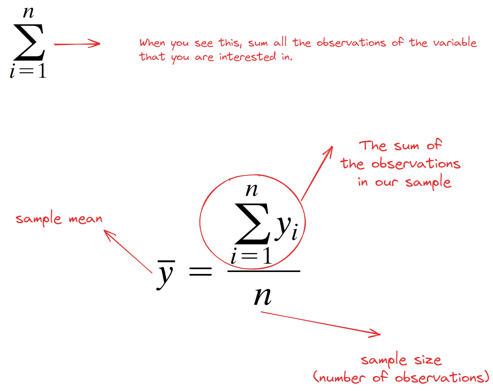

| Smoking_Status | Frequency |
|---|---|
| FALSE | 742 |
| TRUE | 484 |
| Total | 1226 |
Week 2 Lecture 1
Until now, we have:
And OF COURSE
Today we will:
Data sets can be messy and overwhelming at first glance. By using descriptive statistics, we can:
One way of representing data (graphical)
Infographics, charts, plots and even maps are examples of visualizing data.
They can tell a story or help explain/explore data.
According to Royal Statistical Society, a successful data visualization will:
Royal Statistical Society - Best Practices for Data Visualisation
Descriptive Statistics: Statistics used for describing and summarizing data.
Inferential Statistics: Statistics used to make predictions and draw conclusions. (We will get to this on Wednesday)
Parameter: A number represents the entire population (e.g., population mean).
Statistic: A number calculated from a sample (e.g., sample mean).
In this section, you will see two examples for summarizing a single categorical variable.
| Smoking_Status | Frequency |
|---|---|
| FALSE | 742 |
| TRUE | 484 |
| Total | 1226 |
A visual representation of categorical data showing the number of observations in each category.
| Likert_Response | Frequency |
|---|---|
| Strongly Disagree | 13 |
| Disagree | 21 |
| Neutral | 18 |
| Agree | 23 |
| Strongly Agree | 25 |
| Total | 100 |


A visual summary of a quantitative variable.
Histograms help identify shape of the distribution, outliers, central tendency, and variability.
No Gaps between Bars: Unlike a bar chart, there are no gaps between the bars in a histogram because the bins are continuous.
The shape of a distribution can be represented by a smooth curve approximating of the histogram.

To understand the center or typical value of a data set, we calculate
We also call these as “Central Tendency”
Tip
We employed a symbolic convention to differentiate between a variable and an observed value of that variable.
We now denote
We calculate the mean by using this formula
| Measures of Center | Data and Calculation | Result |
|---|---|---|
| Mean | (2+4+6+6+22)/5 | 8 |
| Median | 2,4,6,6,22 | 6 |
| Mode | 2,4,6,6,22 | 6 |
Let’s assume we managed to collect data from our squirrels on campus :) Our class was divided into three groups, and each group measured the weights (lbs) of 10 squirrels. Here are the results:
Group 1: 1.25, 1.25, 1.25, 1.25, 1.25, 1.25, 1.25, 1.25, 1.25, 1.25
Group 2: 1.0, 1.0, 1.0, 1.0, 1.0, 1.5, 1.5, 1.5, 1.5, 1.5
Group 3: 1.0, 1.4, 1.2, 1.4, 1.1, 1.3, 1.6, 1.0, 1.2, 1.3
Dr. Demirci mentioned that looking at these numbers is so confusing. Can you please calculate the sample mean for them to summarize this data?
All these groups calculated the same mean, which is 1.25 lbs. Dr. Demirci seemed not so happy with this number.